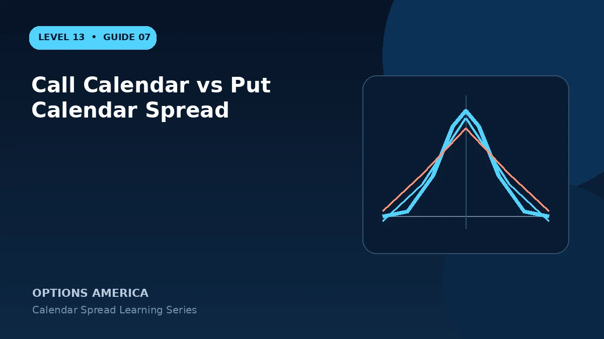

Compare call and put calendars with the same strike and expirations through pricing, delta, assignment, dividends and liquidity.
Shared time thesis
Both sell a near option and buy a later option at one strike. When centered ATM, both can seek faster front-month decay while retaining back-month time value.
Directional exposure
OTM call calendars are commonly used for bullish targets and OTM put calendars for bearish targets. Exact delta depends on both options and can shift as price approaches the strike.
Assignment
An ITM short call may be assigned around dividends, while an ITM short put can create long shares. American-style exercise risk must be monitored separately from modeled P&L.
Choose by execution
Compare net debit, extrinsic values, spreads and open interest. Put-call parity may link theoretical prices, but live markets and account consequences can favor one version.
A practical example
At a $100 strike, the call calendar costs $1.70 and the put calendar $1.62. The smaller debit does not automatically win if the put markets are wider or assignment is less convenient.
This simplified example uses selected price, time and volatility assumptions; live results will differ. Live option prices also reflect the underlying price, time decay, rates, dividends, liquidity and transaction costs. Greeks are theoretical estimates, not guarantees.
Frequently asked questions
Are call and put calendars identical?
Not operationally, even when modeled results are similar.
Which is bullish?
An OTM call calendar is often used for a bullish target.
Which should I trade?
Use the version that matches the target and offers cleaner execution.
Continue the Calendar Spreads cluster
Explore related guides: Calendar Spread vs Diagonal Spread · Theta and Time Decay in a Calendar Spread · Calendar Spread Explained: Strategy, Risk and Reward. For a structured sequence, use the free Level 13 – Calendar Spreads course.
Options involve risk and are not suitable for every investor. This material is educational and is not investment, tax or legal advice. Greeks are theoretical estimates, and contract terms and broker requirements can vary.